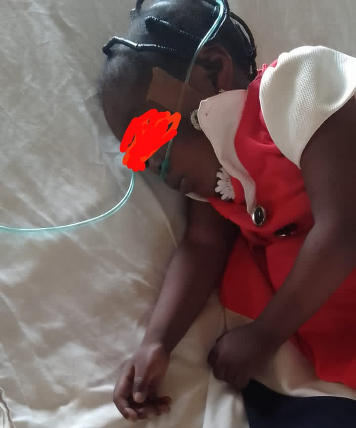

Please Help Save Her Life

About Divine
Dear Fathers, Friends, and Fellow Compatriots,
I write to you today with a burdened heart and a plea for help, on behalf of a little girl who deserves the chance to live.
Her name is Divine Oyekanmi. She’s just three years old, bright-eyed, full of promise, and already bearing a cross far too heavy for her tender age. Divine has been diagnosed with Tetralogy of Fallot (TOF) – a serious and complex congenital heart condition commonly known as a hole in the heart. She is currently receiving care at the Obafemi Awolowo University Teaching Hospital Complex (OAUTHC), Ile-Ife, but the journey ahead remains uncertain without urgent intervention.
Her condition is deteriorating. Every breath is a battle. Every moment is a prayer.
I have known her parents personally for over a decade. They are loving, humble, and hardworking people. But no parent is ever prepared for this kind of storm. Watching their daughter suffer this way has left them crushed and emotionally drained. Their world is falling apart right before their eyes, and they need our help – NOW.
I believe in the power of community, and I believe there’s still hope for Divine. That hope lies in our hands, in our compassion, in our giving, whether it's a generous sum or a widow’s mite. We are in need of Nine Million Naira – ₦9,000,000 (which caters for the surgery, medical steps and procedures, and the hospital stay).
Let’s rally around this family. Let’s help give Divine a fighting chance at life.
How You Can Help
Direct Donation (Preferred):
0719487211 - Access Bank - Oyekanmi Aanuoluwapo
Or reach out to me for coordination or questions:
WhatsApp Me or call 09032201075
Donate Now via WhatsAppPlease don’t scroll past. You might be the answer to this little girl’s prayer.
Together, we can save her. Please, help us.